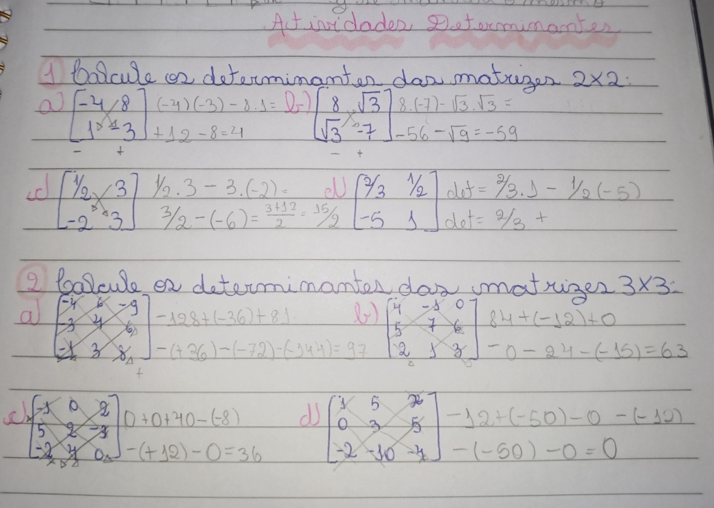

Determinantes
O determinante de uma matriz é um valor, resultante de uma conta com os valores dessa matriz, que fornece informações sobre suas propriedades. Esse valor é encontrado apenas em matrizes quadradas, onde o número de linhas seja o mesmo do de colunas. Dependendo da ordem da matriz o cáculo do determinante dela irá mudar. Veremos como descobrir o determinante de uma matriz de ordem 1, ordem 2 e ordem 3.
A matriz de ordem 1 tem apenas um valor em seu interior, então esse valor será seu determinante.
EX.: A = [-6], B = [3] e C = [2]. Logo, det(A) = -6, det(B) = 3 e det(C) = 2.
A matriz de ordem 2 é aquela que tem 2 linhas e 2 colunas, logo possuí 4 valores em seu interior. Para descobrir o determinante dela teremos que multiplicar as diagnois e depois subtrair uma pela outra, ou seja:
det = a11 . a22 - a12 . a21
EX.:
| -6 | 0 |
| -3 | 12 |
det = -72 - ( 0 . 3 )
det = -72
A matriz de ordem 3 é aquela que tem 3 linhas e 3 colunas, ou seja, que tem 9 valores em seu interior. Assim como a ordem 2 nós temos que multiplicar as diagonais e depois subtrair, mas dessa vez temos mais números, mais colunas e mais linhas, então o processo terá algumas alterações.
det = a11 . a22 . a33 + a12 . a13 . a31 + a13 . a21 . 32
- a13 . a22 . a31 - a11 . a23 . a32 - a12 . a21 . a33
Pode parecer um pouco complicado e trabalho, mas depois de treinar pegamos o jeito. Basicamente para que possamos multiplicar todas as diagonias colocamos as duas primeiras colunas no fim. Multiplicamos da maneria que está, para a direita são aquelas que terão valores positivos e devemos somar, e para a esquerda são os negativos que teremos que subtrair.
EX.:
det = -3 -112 -12 -24 = -153
Como havia dito, para entender bem é necessário treinar, então abaixo deixarei duas matrizes, uma de ordem 2 e outra de ordem 3, que terão valores aleatórios e a cada vez que atualizar a página mudarão, e ao lado deixarei o valor de seu determinante para que na hora que for treinar possa conferir a resposta correta.
Propriedades
Os determinantes possuem algumas propriedades importantes, veremos 5 delas!
Quando uma matriz tiver toda uma fila de zeros, seja uma linha ou coluna, seu determinante será automaticamente 0.
Quando uma matriz tiver ao menos duas filas paralelas que forem iguais seu determinante também será 0. Veja um exemplo:
| 1 | 1 | 0 |
| 2 | 2 | 1 |
| 3 | 3 | 4 |
det = 8 + 3 - 3 - 3 = 0
Se houver ao menos duas filas paralelas que sejam proporcionais, por exemplo, um fila e outra que seja seu dobro, entre outros, o determinante da matriz também será 0. Podemos ver que as duas primeiras linhas são proporcionais na seguinte matriz:
| 1 | 3 | -2 |
| -2 | -6 | 4 |
| 1 | 1 | 4 |
det = -24 + 12 + 4 - 12 - 4 + 2 = 0
Uma matriz terá o mesmo determinante que sua matriz transposta, logo, det(M) = det(Mt).
Essa propriedade diz que se multiplicarmos uma fila de uma matriz quadrada por uma constante k, o determinante da matriz continuará sendo igual ao da matriz original multiplicado pelo valor de k. Veja abaixo um exemplo onde a terceira coluna é multiplicada por 3:
| 1 | 2 | 0 |
| 0 | 2 | 1 |
| 3 | -3 | 4 |
det = 8 + 6 - (-3) = 17
| 1 | 2 | 0 |
| 0 | 2 | 3 |
| 3 | -3 | 12 |
det = 24 + 18 - (-9) = 51
17 x 3 = 51
Atividades
Abaixo deixarei as resoluções de atividades sobre determinantes que fizemos na aula:
Considerações
Não vimos ainda todo o conteúdo, porém do que vimos até agora não tive nenhum problema de compreender. Devo dizer que calcular o determinante de matrizes de ordem 3 pode ser um pouco confuso, mas assim como a multiplicação das matrizes, basta treinar que fica fácil. Na hora da prova acabei esquecendo das propriedades, e como não anotei no resumo tive que apensas encontrar sem as propriedades, então creio que precisarei revisar melhor essa parte.